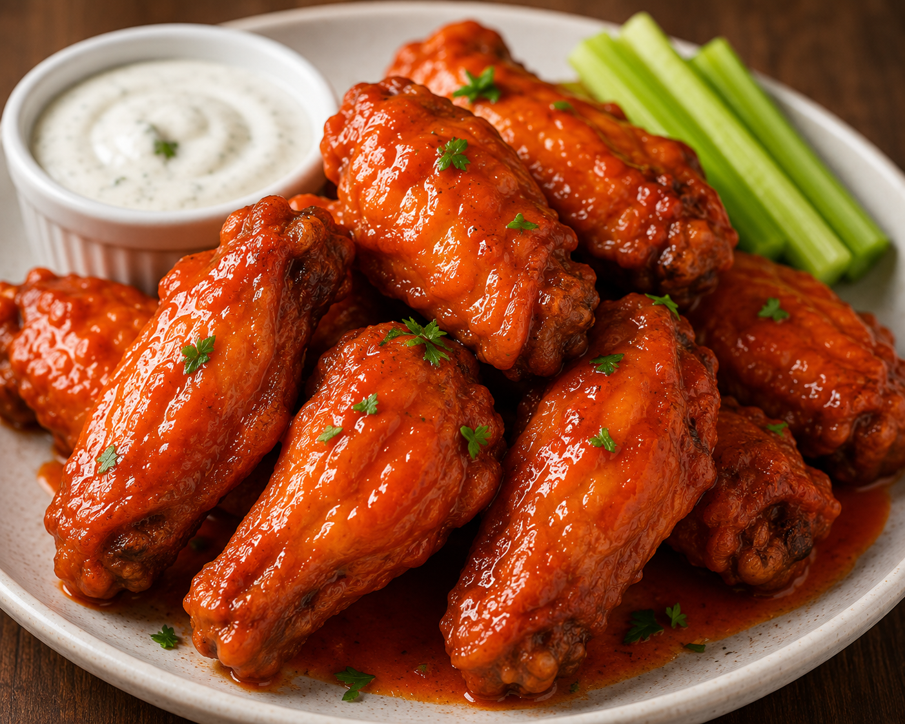

These crispy oven Baked Chicken Wings are so easy to prepare and you don't even need to bother with all the grease from frying
Whether you're watching football, basketball or even your favourite show, these wings are baked to crispy perfection, and then tossed in the most delicious sweet and spicy buffalo sauce. They're totally addicting and perfect for game day! Make them ASAP, and then thank me later!